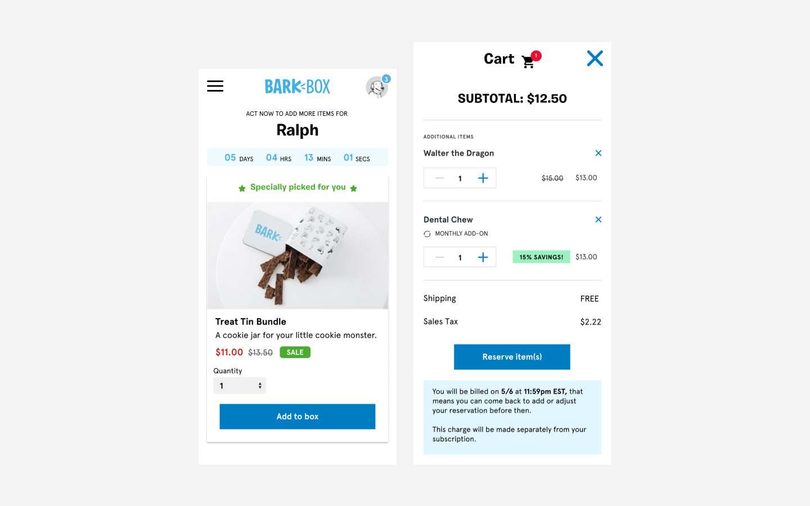
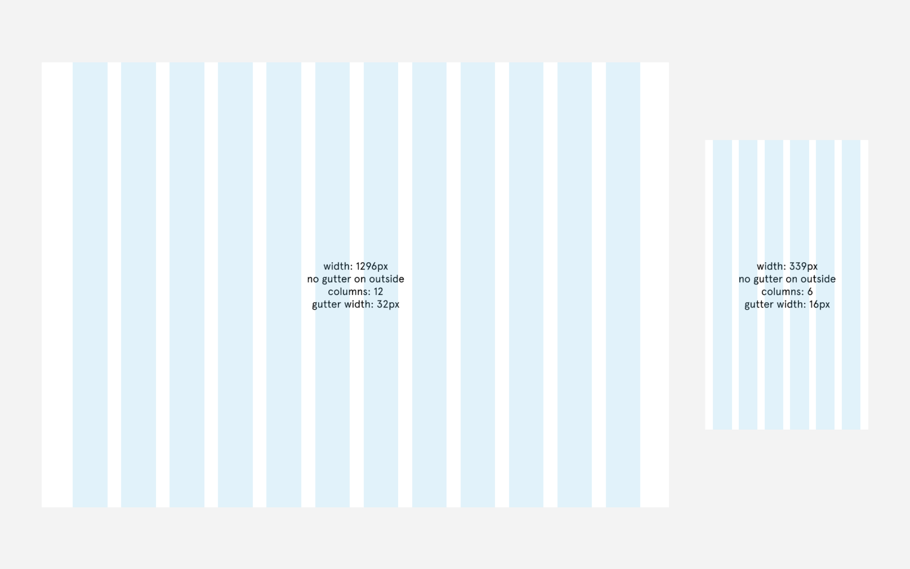
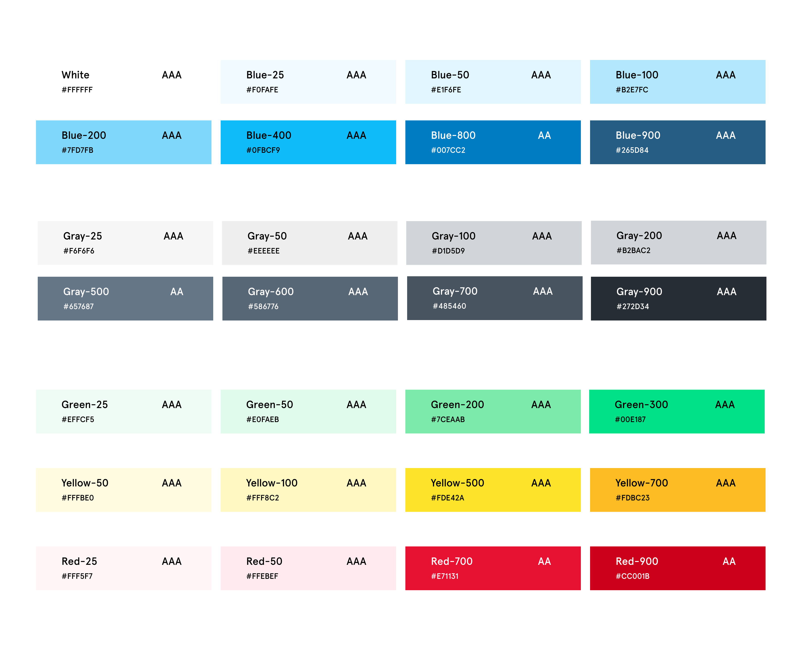
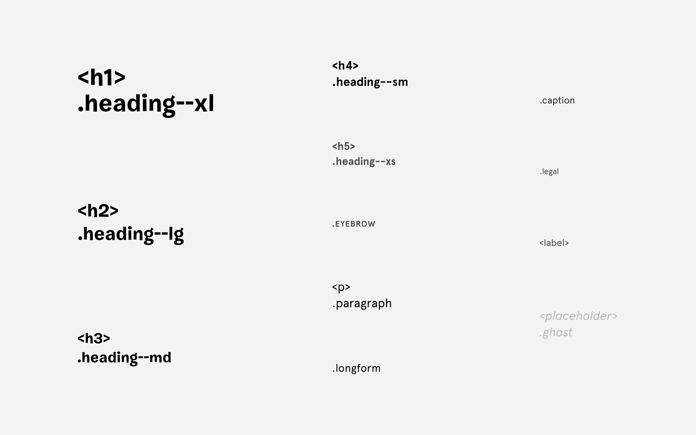
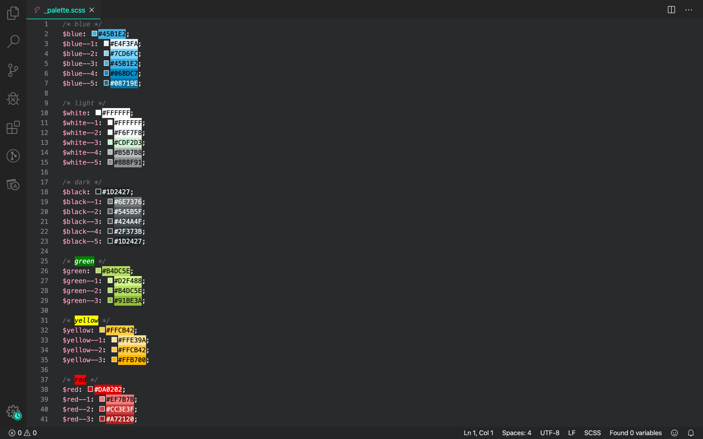

audit of style declarations—or proof that we desperately needed a design system
overview
01 — problem
02 — role
problem
barkbox product designers lacked not only a design system, but a consistent set of values and styles to adhere to for making design decisions. the current style guide at the time was outdated, unmaintained, and resulted in confusion and frustration between designers and developers.
role
as the senior product designer on a team of three, i took the lead on setting up our design system, doggo, and helped bridge the gap between design and dev by facilitating communication between the teams and taking on writing the majority of the css for our design decisions.
design & dev toolkit
stickies
sketch
abstract
html & css
audit
01 — impact
02 — solution
impact
the impact of such a scattered and outdated set of styles is immense. designers are working with what they believe to be the latest styles, while devs would grab the first one they found that matched closely enough. mismatched designs, shaky hand-offs, and lack of collaboration between the two meant we spent more time focusing on fixing designs than creating them.
similar concepts, different designers, different styles
solution
the solution was, quite simply, a design system. creating and implementing that, however, would not be so simple. with the physical brand, marketing, and digital experiences owned by different teams, and a number of verticals and squads within each of those, this was undoubtedly a recipe for too many cooks in the kitchen. we decided to take a step back, identify the needs of our squads specifically, and start small with a digital style guide that would improve our product workflows.
ideate
01 — grid
02 — palette
03 — type
grid
designing without a grid is hell. developing without one is in a league of its own. our site was adaptive at best, and it was built some time ago when mobile-first wasn't as strictly practiced. it was time to change that, and it started with a simple grid concept to get our designers on the same plane.
palette
a well-established brand with a recognizable blue, we knew we weren't going to change that. but the brand's palette was derived for print materials in the box and was a handcuff when designing digital experiences. using that 'bark blue' as a foundation, we derived an extended palette for digital use and made sure to meet accessibility standards.
type
57 font families and 127 font sizes is enough to make any designer or developer puke—and that doesn't even get into weight, leading, line-height, and the lot of it. i started fresh and developed a type scale based on our most used existing styles and best practices for new ones.
form concepts based on new standardized grid, color, and type styles
develop
01 — refine
02 — front-end
03 — implement
refine
once i had the bones of our system—grid, palette, and type, we decided—the team began to contextualize our new styles around their squads existing and upcoming product features. we fine-tuned colors and type styles along the way and nailed down some additional pieces like vertical rhythm and layers.

front-end
given my passion and affinity for front-end dev—especially that of css and the styling and microinteractions that come with it—and lack of dev resources, i took on writing the scss that would become the living foundation for our new design system.
implement
there was still much work to be done, but with the blessing of both my design and development teams, i set out to build a live prototype to showcase our new styles and provide old and new hires alike with the full documentation of our new design system, doggo.
view doggo prototype ->impact
01 — workflow
02 — accessibility
workflow
for the first time since i'd been hired, barkbox finally had a digital style guide for its designers and developers to begin to adhere to. it would take time to formalize all components and implement changes across the site, but having a source of truth for all future decision-making would alleviate a lot of the tensions among and between teams that our current decentralized, outdated system caused.
accessibility
in addition to the major internal wins of having a design system—if only the barest of bones to start—we managed to alleviate a large percentage of the accessibility concerns revealed by a recent audit. given both the legal and moral implications of accessibility, this was a major win.